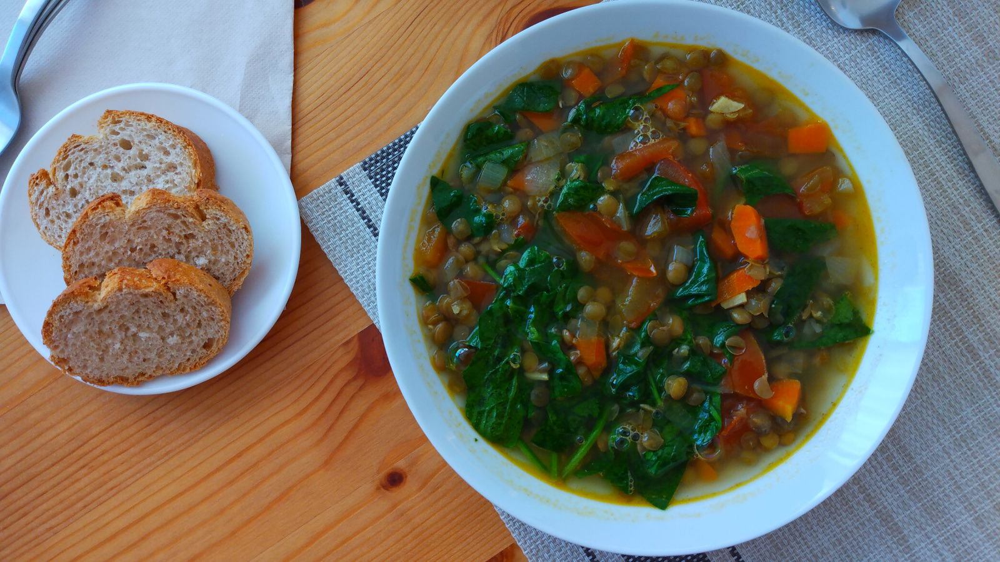

Sopa de Lentejas al Curry
- Preparación: 15 min
- Cocción: 45 min
- Porciones: 4 - 6 porciones
INGREDIENTES
- Aceite de olivo
- 1 cebolla mediana picada
- 2 - 3 zanahorias peladas y picadas
- 4 dientes de ajo finamente picados
- 2 cucharaditas de comino molido
- 1 cucharadita de curry
- 3 tomates (jitomates) picados
- 1 taza de lentejas (crudas) enjuagadas y escurridas
- 6 tazas de agua
- 3 - 4 tazas de espinacas lavadas y picadas
- sal y pimienta al gusto
DESCRIPCIÓN
La combianción de especias en esta deliciosa sopa es insuperable. Tiene un carácter fuerte que la convierte en una excelente opción para acompañar con pan recién horneado, con arroz o con cuscús. Es un platillo muy completo por su contenido proteínico, y un verdadero placer para los amantes de la comida especiada.
INSTRUCCIONES
- En una olla grande, calentar a fuego medio alto el aceite de olivo. Agregar la cebolla y las zanahorias. Cocinar por aproximadamente 5 minutos o hasta que la cebolla se vea transparente, removiendo ocasionalmente.
- Añadir el ajo, comino y curry. Cocinar aproximadamente 30 segundos sin dejar de remover. Agregar los tomates picados y dejar cocinando unos minutos más, removiendo de vez en cuando.
- Agregar las lentejas y el agua. Salpimentar al gusto. Poner el fuego más alto y dejar que la sopa hierva. Luego bajar el fuego y dejar que siga cocinándose lentamente con la olla medio cubierta, por aproximadamente 30 minutos. Las lentejas deben de estar cocidas sin llegar a deshacerse.
- Añadir las espinacas picadas y dejar que se cocinen con la sopa por aproximadamente 5 minutos. Retirar del fuego y servir bien caliente.
Notas
- Esta receta puede prepararse intercambiando las espinacas por col rizada (kale) o por acelgas. Cualquiera de estas variaciones es muy recomendable.